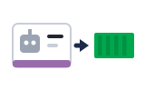
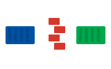
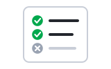
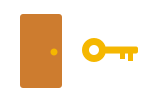

01Who can · អ្នកណាអាចRBAC
RBAC decides who can do what in the cluster.
RBAC សម្រេចថា អ្នកណាអាចធ្វើអ្វីបាន ក្នុង cluster។
សុវត្ថិភាព និង RBAC · ឲ្យសិទ្ធិត្រឹមត្រូវ ហើយបិទទ្វារដែលមិនត្រូវការ
សុវត្ថិភាពគឺជាស្រទាប់ៗ៖ អ្នកណាធ្វើអ្វីបាន pod មួយណានិយាយគ្នាបាន និង image មានរន្ធឬអត់។

Service accountគណនីសម្រាប់កម្មវិធី
Network policyជញ្ជាំងរវាង podតាមលំដាប់៖ RBAC → សិទ្ធិតិចបំផុត → network policy → ស្កេន និង update។
Space listen · ← → move · K show text
RBAC decides who can do what in the cluster.
RBAC សម្រេចថា អ្នកណាអាចធ្វើអ្វីបាន ក្នុង cluster។

A role is a list of allowed actions.
Role គឺជាបញ្ជីសកម្មភាពដែលត្រូវបានអនុញ្ញាត។
A role binding gives that role to a user or a service account.
Role binding ផ្តល់ role នោះ ទៅអ្នកប្រើ ឬ service account។
Apps use service accounts, not people's accounts.
កម្មវិធីប្រើ service account មិនមែនគណនីរបស់មនុស្សទេ។

We give the least access that still does the job.
យើងផ្តល់សិទ្ធិតិចបំផុត ដែលនៅតែអាចធ្វើការងារបាន។
Containers should not run as root.
កុងតឺន័រមិនគួរដំណើរការជា root ទេ។
Network policies decide which pods can talk to each other.
Network policy សម្រេចថា pod មួយណាអាចនិយាយជាមួយគ្នាបាន។
We scan images for known security holes.
យើងស្កេន image រកចន្លោះប្រហោងសុវត្ថិភាពដែលគេស្គាល់។
We keep the cluster and images up to date.
យើងរក្សា cluster និង image ឲ្យទាន់សម័យជានិច្ច។
No. One mistake could delete everything. Give each person only what they need.
មិនបានទេ។ កំហុសតែមួយអាចលុបអ្វីៗទាំងអស់។ ឲ្យម្នាក់ៗតែអ្វីដែលគេត្រូវការ។
នេះហៅថា least privilege ឬសិទ្ធិតិចបំផុត។
Only if the network plugin supports it.
តែក្នុងករណីដែល network plugin គាំទ្រវាប៉ុណ្ណោះ។
បើ plugin មិនគាំទ្រ policy នឹងគ្មានប្រសិទ្ធភាព ហើយគ្មាន error ប្រាប់ទេ។
Your account has no role for that action in this namespace.
គណនីរបស់អ្នកគ្មាន role សម្រាប់សកម្មភាពនោះ ក្នុង namespace នេះទេ។
Only the platform team.확인 필요 · checkcheck
មានតែក្រុម platform ប៉ុណ្ណោះ។
The scan found two high issues. We'll update the base image.확인 필요 · checkcheck
ការស្កេនរកឃើញបញ្ហាធ្ងន់ពីរ។ យើងនឹង update base image។
Tap a word's play button to hear it. Hide one side, then recall it before you tap to check.
Q. Can I give everyone cluster-admin to save time?
Q. ខ្ញុំអាចឲ្យ cluster-admin ដល់គ្រប់គ្នា ដើម្បីសន្សំពេលបានទេ?
A. No. One mistake could delete everything. Give each person only what they need.
A. មិនបានទេ។ កំហុសតែមួយអាចលុបអ្វីៗទាំងអស់។ ឲ្យម្នាក់ៗតែអ្វីដែលគេត្រូវការ។
Q. Does a network policy work in every cluster?
Q. Network policy ដំណើរការក្នុងគ្រប់ cluster ទេ?
A. Only if the network plugin supports it.
A. តែក្នុងករណីដែល network plugin គាំទ្រវាប៉ុណ្ណោះ។
Q. Why do I get Forbidden?
Q. ហេតុអ្វីខ្ញុំទទួលបាន Forbidden?
A. Your account has no role for that action in this namespace.
A. គណនីរបស់អ្នកគ្មាន role សម្រាប់សកម្មភាពនោះ ក្នុង namespace នេះទេ។
Q. Who can delete pods in production?
Q. អ្នកណាអាចលុប pod នៅ production?
A. Only the platform team.
A. មានតែក្រុម platform ប៉ុណ្ណោះ។
Q. Is our image safe?
Q. Image របស់យើងមានសុវត្ថិភាពទេ?
A. The scan found two high issues. We'll update the base image.
A. ការស្កេនរកឃើញបញ្ហាធ្ងន់ពីរ។ យើងនឹង update base image។
I need read access to the staging namespace.
ខ្ញុំត្រូវការសិទ្ធិអាន namespace staging។
Who should approve this access?
អ្នកណាគួរអនុម័តសិទ្ធិនេះ?
Say it in your head first, then tap the box to check.